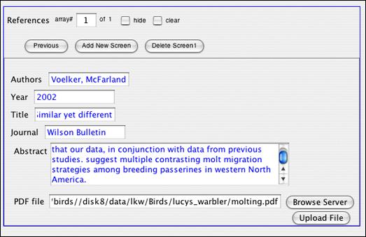
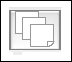
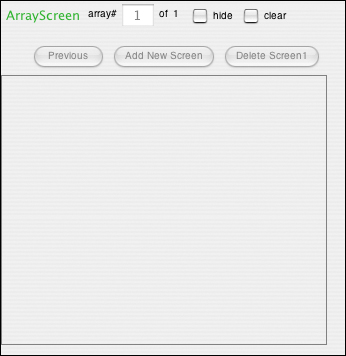
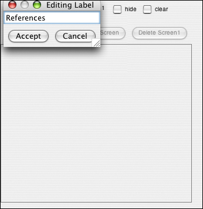
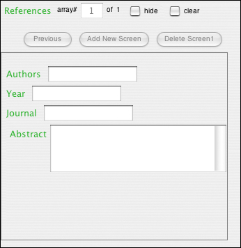

Array screen widget
Array screen widgets contain collections of data "screens," where each screen has the same organizational structure. In other words, screens in an array all contain the same widgets.An example of this is shown below, in which each screen contains information about one journal article. So each screen has the same text fields to fill out. The user would add a new article by clicking the "Add New Screen" button, and then filling out the text fields with the new information.
Example:

In the Create Form tab, click on the array screen widget icon in the toolbar.

A new array screen widget appears with a default label.

Double click on the label to change it to the label you would like to use.

You may add whatever widgets you would like to the screen by clicking on their icons in the toolbar, and then dragging them into the array screen widget. Keep in mind that each widget you add will show up on every screen, in the same position and with the same name. It will just be able to contain a different value.

| Previous page | Return to top of page | Next page |